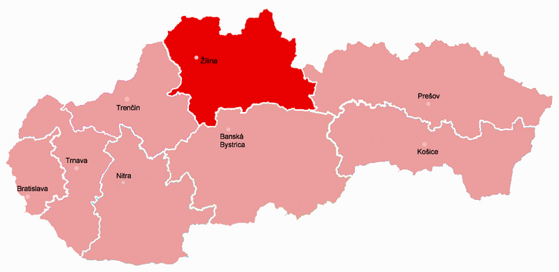
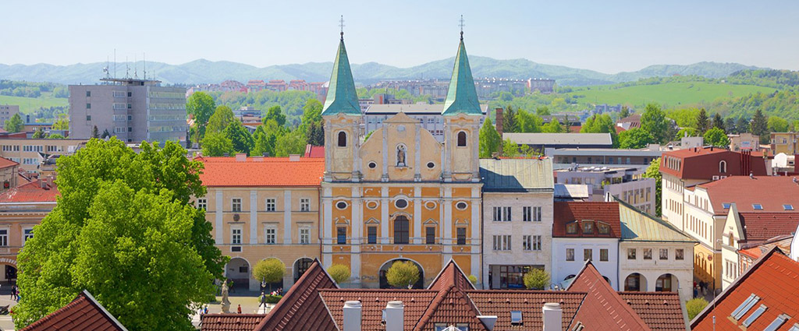

Interview with Slovak student
Gabriela is an international student who will share with us some interesting things about her country.
By Silvia Artero and Gabrila Rodičková
Talking with Gabi
EveryWhere: From which part of Slovakia are you?
Gabriela: Žilina which is in the northwest of Slovakia.
EW: How is like living there?
G: I like it so much because mostly of the nature. My city is in the middle of all mountains, it is surrounded by them.

Map of Slovakia
EW: How’s the weather like there?
G: The weather is always changing. We have all four seasons, but in my city the winters are really harder than in the other parts of Slovakia, because it’s more in the north. So, during the winter we can have -20º or less, so yes, sometimes is really cold. And in south Slovakia is hotter during the summer, of course, and not that cold during the winter.
EW: Do you recommend any place in Slovakia to go and visit?
G:G: I really recommend the nature in the whole Slovakia, forests and mountains. There are a lot of caves, like 2.000 but not all of them are open to the public. Also, there are lots of nice castles to visit and in Slovakia you can find the largest castle in Central Europe, Spiš Castle, which is right under High Tatras, the highest mountains of the country.

EW: Which would it be the typical food of Slovakia?
G:Oh yes, we have a really typical food that is called Halušky. Basically, are potatoes with flour, then mixed with special cheese from Slovakia and with beacon on the top. This a heavy meal, because people before needed to be feed for the long work journeys. Now, with two spoons you’ll be full. The visual part isn’t that great because it looks like already someone ate it, but, the taste is so good...
EW: Do you have more typical food or Halušky is the main one?
G:I think it’s the main one, but in the north area there is Syrové Korbáčik, they are like cheese braids. It is made from smoked cheese interwoven into fine braids. Halušky maybe is not tasty for everyone, but this cheese braids are the best!
EW: Is there any fun fact that you can tell us about Slovakia?
G:I don’t know right now, but maybe it’s interesting our typical national dress, called Slovenske Kroje, which in each region it changes the colours, ones can be more colourful than others, and the flowers also are different, there is variety in the small details. These dresses we wear them in special occasions, like some celebrations where people dance and sing.
Maybe a curious and interesting fact is that we have a national hero called Jánošík, who according to the legend, he robbed nobles and gave it to the poor.
Thank you, Gabriela, for sharing with us your beloved country!
If you want to share your country with us, JOIN US!